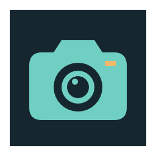

Tracefolio REPORTS & ISSUES
Tracefolio REPORTS & ISSUESPixel Camera 카메라 심볼과 공통 배경 규격 적용
검증 대기눈 심볼을 카메라로 교체하고 EntityForge와 동일한256px·16px여백·짙은 배경 규격을 적용했습니다.
작업 결과
컬러·흰색 로고를 실제 Affinity에서 제작해 기존 PNG 경로에 적용했습니다. 컴퓨터 유즈는 사용하지 않았습니다.

변경 전: 배경 없는 곡선 눈 심볼.

변경 후: 공통 배경과 카메라 본체·렌즈·셔터 표시. 실제 Affinity 렌더이며 Unity UI 캡처는 아닙니다.
변경 내용
적용 내용
EntityForge 원본과 직접 대조해256×256, 알파 바운드(16,16)-(240,240), 배경#15262E를 일치시켰습니다. 기존 PNG와 메타 GUID는 보존했습니다. 메모리 매핑 때문에 덮어쓰기가 거부되어 기존 PNG를 개발폴더에 이동 보존 후 새 파일을 복사했습니다.
검증
실제 Affinity3.3.1.4940 doctor/status와 네이티브 문서 생성·렌더 성공. 픽셀 변경 없이 PNG 컨테이너 저장. 크기·알파영역·배경색 원본 대조 통과.256px 형태 검토. 컬러3839bytes, 흰색3869bytes.
남은 사항
SDK saveAs는 PERMISSION_DENIED. 컴퓨터 유즈 금지를 지켜 저장 대화상자를 조작하지 않았습니다. 편집 가능한7레이어 문서는 Affinity에 열어 두었고 재현 SDK 스크립트·렌더 원본을 제품폴더에 보존했습니다. .af 파일 저장·재열기와 Unity 실제 표시·작은크기 QA는 미실행입니다. 전후 Unity 화면 미확보이며 비교검증 완료로 처리하지 않습니다. 스토어 패키지는 재생성하지 않았습니다. 교훈 검토: 기존 연결·산출물 보존 지침으로 충족, 전역 추가 변경 없음.
작업 시간
- 제안 시간: 5분
- 실제로 완료된 시간: 2026-11-02 18:47:43 KST 실행 허용 후 재개,18:49:40 KST 제작·적용·규격 대조까지 약1분57초. 공개 배포 시간 별도 확인.
- XERJ: 미사용 — 코드 검색 불필요; 로고 에셋 경로 확인만 수행